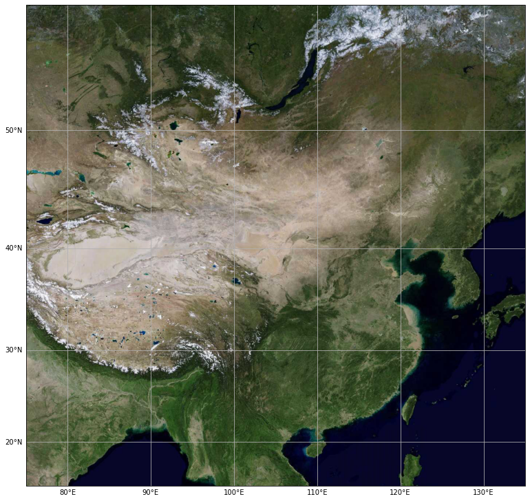
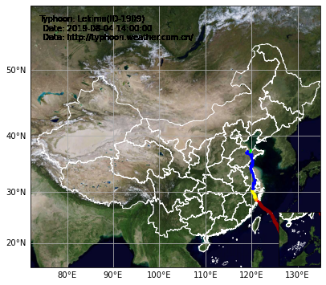
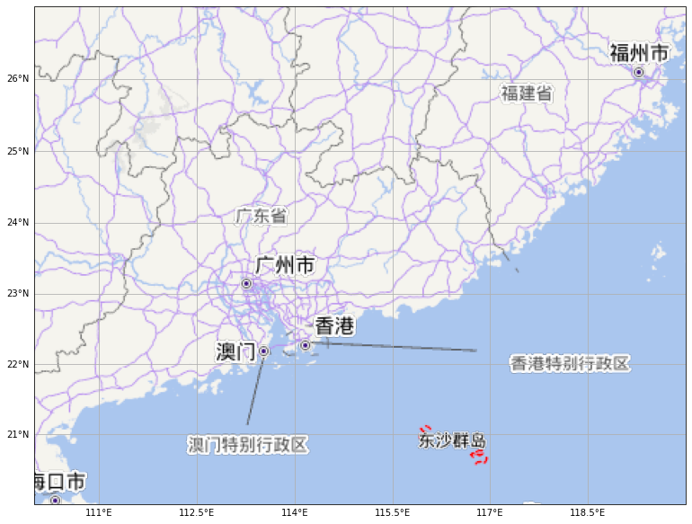
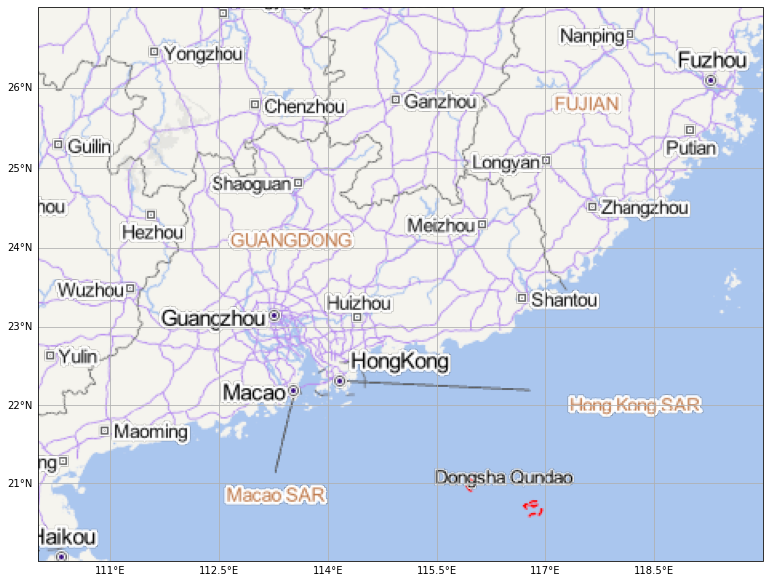
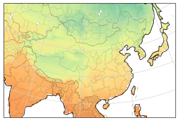

Cartopy 地图绘制（2）¶

Cartography Python
主讲人：李显祥
大气科学学院
地图背景 - 天地图¶
from IPython.display import IFrame
web = IFrame(src='https://www.tianditu.gov.cn/index.html', width=1000, height=500)
display(web)
天地图（和其它很多种地图服务）都采用 Web Map Tile Service (WMTS) 来提供地图服务。
常用的有 Google，OpenStreetMap等
国内有百度、高德等
由于它们都遵循相同的规范，我们可以通过修改 cartopy 中已有的 Google 地图类来实现天地图的调用。
import matplotlib.pyplot as plt
import cartopy.io.img_tiles as cimgt
import cartopy.crs as ccrs
from cartopy.io import shapereader
from cartopy.mpl.gridliner import LONGITUDE_FORMATTER, LATITUDE_FORMATTER
headers='Mozilla/5.0' #{'User-Agent': 'Mozilla/5.0'}
tk = <your-token>
class TDT(cimgt.GoogleWTS):
def __init__(self, desired_tile_form='RGB', cache=False):
super().__init__(desired_tile_form=desired_tile_form,
user_agent = headers)
def _image_url(self, tile):
x, y, z = tile
url = 'http://t0.tianditu.gov.cn/DataServer?T=vec_w&x=%s&y=%s&l=%s&tk=%s'% (x, y, z, tk)
return url
class TDT_ter(cimgt.GoogleWTS):
def __init__(self, desired_tile_form='RGB', cache=False):
super().__init__(desired_tile_form=desired_tile_form,
user_agent = headers)
def _image_url(self, tile):
x, y, z = tile
url = 'http://t0.tianditu.gov.cn/DataServer?T=ter_w&x=%s&y=%s&l=%s&tk=%s'% (x, y, z, tk)
return url
class TDT_img(cimgt.GoogleWTS):
def __init__(self, desired_tile_form='RGB', cache=False):
super().__init__(desired_tile_form=desired_tile_form,
user_agent = headers)
def _image_url(self, tile):
x, y, z = tile
url = 'http://t0.tianditu.gov.cn/DataServer?T=img_w&x=%s&y=%s&l=%s&tk=%s'% (x, y, z, tk)
return url
File "<ipython-input-2-9216c7829aa2>", line 8
tk = <your-token>
^
SyntaxError: invalid syntax
def make_map(projection=ccrs.PlateCarree()):
fig, ax = plt.subplots(figsize=(13, 13),
subplot_kw=dict(projection=projection))
gl = ax.gridlines(draw_labels=True)
gl.top_labels = gl.right_labels = False
gl.xformatter = LONGITUDE_FORMATTER
gl.yformatter = LATITUDE_FORMATTER
return fig, ax
extent = [75, 135, 15, 55] #21.5, 23.5] #广东图
#request = TDT() #矢量图层
request = TDT_img() #影像
#request = TDT_ter() #地形
fig, ax = make_map(projection=request.crs)
ax.set_extent(extent)
ax.add_image(request, 5)# leve l=10 缩放等级

绘制台风路线¶
import matplotlib.pyplot as plt
import cartopy.crs as ccrs
from cartopy.mpl.gridliner import LONGITUDE_FORMATTER, LATITUDE_FORMATTER
import cartopy.io.img_tiles as cimgt
import cartopy.feature as cfeat
from cartopy.io.shapereader import Reader
import pandas as pd
%matplotlib inline
def make_plot(WTS,level):
extent = [72, 135, 15, 54]
shp= '../shp_file/china.shp'
proj = ccrs.PlateCarree()
fig, ax = plt.subplots(figsize=(10, 6), subplot_kw=dict(projection=WTS.crs))
gl = ax.gridlines(draw_labels=True)
gl.top_labels = gl.right_labels = False
gl.xformatter = LONGITUDE_FORMATTER
gl.yformatter = LATITUDE_FORMATTER
ax.set_extent(extent)
ax.add_image(WTS, level)
reader = Reader(shp)
provinces = cfeat.ShapelyFeature(reader.geometries(),proj, edgecolor='white', facecolor='none')
ax.add_feature(provinces, edgecolor='w',linewidth=1)
sub_extent = [105, 125, 0, 25]
sub_ax = fig.add_axes([0.66, 0.13, 0.135, 0.155], projection=WTS.crs)
sub_ax.set_extent(sub_extent)
sub_ax.add_image(WTS, level)
sub_ax.add_feature(provinces, edgecolor='w',linewidth=1)
return fig,ax,sub_ax
typhoon = pd.read_csv("1909.csv")
typhoon.dropna(subset=['wind'],inplace=True)
typhoon = typhoon.reset_index()
typhoon['class'] = ''
typhoon.loc[(typhoon['wind']>=10.8) & (typhoon['wind']<=17.1),'class'] = 'TROPICAL DEPRESSION'
typhoon.loc[(typhoon['wind']>17.2) & (typhoon['wind']<=24.4),'class'] = 'TROPICAL STORM'
typhoon.loc[(typhoon['wind']>24.5) & (typhoon['wind']<=32.6),'class'] = "SEVERE TROPICAL STORM"
typhoon.loc[(typhoon['wind']>32.7) & (typhoon['wind']<=41.4),'class'] = "TYPHOON"
typhoon.loc[(typhoon['wind']>41.5) & (typhoon['wind']<=50.9),'class'] = "SEVERE TYPHOON"
typhoon.loc[(typhoon['wind']>51),'class']="SUPER TYPHOON"
#color_dict = {'TROPICAL DEPRESSION': '#7fffd4', 'TROPICAL STORM': '#008000', "SEVERE TROPICAL STORM": '#0000ff',
# "TYPHOON": '#ffff00', "SEVERE TYPHOON": '#ffa500', "SUPER TYPHOON": '#ff4500'}
color_dict = {'TROPICAL DEPRESSION': 'lime', 'TROPICAL STORM': 'blue', "SEVERE TROPICAL STORM": 'yellow',
"TYPHOON": 'orange', "SEVERE TYPHOON": 'red', "SUPER TYPHOON": 'darkred'}
wts = TDT_img()
fig,ax,sub_ax = make_plot(wts,5)
for i in typhoon.index[:-1]:
# fig,ax,sub_ax = make_plot(wts,5)
#
# for i in typhoon.index[:j]:
a0, b0 = typhoon.loc[i,"lon"], typhoon.loc[i,"lat"]
a1, b1 = typhoon.loc[i+1,"lon"], typhoon.loc[i+1,"lat"]
ax.plot((a0,a1),(b0,b1), linewidth=2.5,color=color_dict[typhoon.loc[i+1,"class"]],
transform=ccrs.PlateCarree())
ax.scatter(a0, b0, s=10, c=color_dict[typhoon.loc[i,"class"]], alpha=0.8,
transform=ccrs.PlateCarree())
sub_ax.plot((a0,a1),(b0,b1), linewidth=2.5,
color=color_dict[typhoon.loc[i+1,"class"]], transform=ccrs.Geodetic())
sub_ax.scatter(a0, b0, s=10, c=color_dict[typhoon.loc[i,"class"]],
alpha=0.8, transform=ccrs.PlateCarree())
ax.annotate('Typhoon: %s\n Date: %s\n Data: http://typhoon.weather.com.cn/\n' % ('Lekima(ID-1909)', "2019-08-04 14:00:00"),
xy=(0, 1), xytext=(12, -12), va='top', ha='left',xycoords='axes fraction', textcoords='offset points')

# 参考 https://scitools.org.uk/cartopy/docs/latest/gallery/hurricane_katrina.html
import shapely.geometry as sgeom
import matplotlib.patches as mpatches
lons, lats = typhoon['lon'].values, typhoon['lat'].values
fig = plt.figure()
ax = fig.add_axes([0, 0, 1, 1], projection=ccrs.LambertConformal(central_longitude=105, central_latitude=90,
false_easting=400000, false_northing=400000))
ax.set_extent([72, 135, 15, 54], ccrs.Geodetic())
shp= '../shp_file/china.shp'
reader = Reader(shp)
#provinces = cfeat.ShapelyFeature(reader.geometries(),proj, edgecolor='white', facecolor='none')
# to get the effect of having just the states without a map "background"
# turn off the outline and background patches
ax.patch.set_visible(False)
ax.spines['geo'].set_visible(False)
ax.set_title('Track of Typhoon Lekima (ID-1909)')
# turn the lons and lats into a shapely LineString
track = sgeom.LineString(zip(lons, lats))
# buffer the linestring by two degrees (note: this is a non-physical distance)
track_buffer = track.buffer(2)
def colorize_province(geometry):
facecolor = (0.9375, 0.9375, 0.859375)
if geometry.intersects(track):
facecolor = 'red'
elif geometry.intersects(track_buffer):
facecolor = '#FF7E00'
return {'facecolor': facecolor, 'edgecolor': 'black'}
ax.add_geometries(reader.geometries(),
ccrs.PlateCarree(),
styler=colorize_province)
ax.add_geometries([track_buffer], ccrs.PlateCarree(),
facecolor='#C8A2C8', alpha=0.5)
ax.add_geometries([track], ccrs.PlateCarree(),
facecolor='none', edgecolor='k')
# make two proxy artists to add to a legend
direct_hit = mpatches.Rectangle((0, 0), 1, 1, facecolor="red")
within_2_deg = mpatches.Rectangle((0, 0), 1, 1, facecolor="#FF7E00")
labels = ['Province directly intersects\nwith track',
'Province is within \n2 degrees of track']
ax.legend([direct_hit, within_2_deg], labels,
loc='lower left', bbox_to_anchor=(0.025, -0.1), fancybox=True)
<matplotlib.legend.Legend at 0x1e113653af0>
2018-22台风山竹

天地图的标记图层¶
天地图的标记和边界图层都是透明的，可以叠加在矢量、图像或地形图层上。
需要使用
desired_tile_form='RGBA'选项。需要设置背景为
invisible。
class TDT_e_label(cimgt.GoogleWTS):
'''
带英文标注的矢量图
'''
def __init__(self, desired_tile_form='RGBA', cache=False):
super().__init__(desired_tile_form=desired_tile_form,
user_agent = headers)
def _image_url(self, tile):
x, y, z = tile
url = 'http://t3.tianditu.gov.cn/DataServer?T=eva_w&x=%s&y=%s&l=%s&tk=%s'% (x, y, z, tk)
return url
class TDT_c_label(cimgt.GoogleWTS):
'''
带中文标注的矢量图
'''
def __init__(self, desired_tile_form='RGBA', cache=False):
super().__init__(desired_tile_form=desired_tile_form,
user_agent = headers)
def _image_url(self, tile):
x, y, z = tile
url = 'http://t3.tianditu.gov.cn/DataServer?T=cva_w&x=%s&y=%s&l=%s&tk=%s'% (x, y, z, tk)
return url
# Reference: https://github.com/SciTools/cartopy/issues/762
extent = [110, 120, 20, 27] #广东图
request = TDT() #矢量图层
request_l = TDT_c_label() #desired_tile_form='RGBA') #矢量图层的标注
#print(type(request_l))
#request = TDT_ter() #地形
fig, ax = make_map(projection=request.crs)
ax.patch.set_visible(False)
ax.set_extent(extent)
ax.add_image(request, 6)# level=10 缩放等级
ax.add_image(request_l, 6)

# Reference: https://github.com/SciTools/cartopy/issues/762
extent = [110, 120, 20, 27] #广东图
request = TDT() #矢量图层
request_l = TDT_e_label() #desired_tile_form='RGBA') #矢量图层的标注
#print(type(request_l))
#request = TDT_ter() #地形
fig, ax = make_map(projection=request.crs)
ax.patch.set_visible(False)
ax.set_extent(extent)
ax.add_image(request, 6)# level=10 缩放等级
ax.add_image(request_l, 6)

天地图边界线图层¶
class TDT_borders(cimgt.GoogleWTS):
'''
全球境界
'''
def __init__(self, desired_tile_form='RGBA', cache=False):
super().__init__(desired_tile_form=desired_tile_form,
user_agent = headers)
def _image_url(self, tile):
x, y, z = tile
url = 'http://t3.tianditu.gov.cn/DataServer?T=ibo_w&x=%s&y=%s&l=%s&tk=%s'% (x, y, z, tk)
return url
同时叠加天地图的边界线和 NaturalEarth 边界线，注意两者的区别。
extent = [70, 135, 15, 55] #广东图
#request = TDT() #矢量图层
request_l = TDT_borders() #desired_tile_form='RGBA')
#print(type(request_l))
request = TDT_ter() #地形
fig, ax = make_map(projection=request.crs)
# 为了显示边界层，必须设置此项
ax.patch.set_visible(False)
ax.set_extent(extent)
#ax.set_global()
ax.add_image(request, 5)# level=10 缩放等级
ax.add_image(request_l, 5)
ax.add_feature(cfeat.BORDERS, linestyle=':', linewidth=2)
<cartopy.mpl.feature_artist.FeatureArtist at 0x1e115426640>
绘制 NASA 晚间灯光数据¶
# from https://stackoverflow.com/questions/58377561/cartopy-wmts-keyerror-issue-tilematrixlimits
### START REPLACEMENT ###
from owslib.wmts import TileMatrixSetLink, TileMatrixLimits, _TILE_MATRIX_SET_TAG, _TILE_MATRIX_SET_LIMITS_TAG, _TILE_MATRIX_LIMITS_TAG
def custom_from_elements(link_elements):
links = []
for link_element in link_elements:
matrix_set_elements = link_element.findall(_TILE_MATRIX_SET_TAG)
if len(matrix_set_elements) == 0:
raise ValueError('Missing TileMatrixSet in %s' % link_element)
elif len(matrix_set_elements) > 1:
set_limits_elements = link_element.findall(
_TILE_MATRIX_SET_LIMITS_TAG)
if set_limits_elements:
raise ValueError('Multiple instances of TileMatrixSet'
' plus TileMatrixSetLimits in %s' %
link_element)
for matrix_set_element in matrix_set_elements:
uri = matrix_set_element.text.strip()
links.append(TileMatrixSetLink(uri))
else:
uri = matrix_set_elements[0].text.strip()
tilematrixlimits = {}
path = '%s/%s' % (_TILE_MATRIX_SET_LIMITS_TAG,
_TILE_MATRIX_LIMITS_TAG)
for limits_element in link_element.findall(path):
tml = TileMatrixLimits(limits_element)
if tml.tilematrix:
tilematrixlimits[tml.tilematrix] = tml
links.append(TileMatrixSetLink(uri, tilematrixlimits))
return links
TileMatrixSetLink.from_elements = custom_from_elements
### END REPLACEMENT ###
# Define resource for the NASA night-time illumination data.
base_uri = 'http://map1c.vis.earthdata.nasa.gov/wmts-geo/wmts.cgi'
layer_name = 'VIIRS_CityLights_2012'
extent = [72, 135, 15, 54] #[90,130,15,50]
# Create a Cartopy crs for plain and rotated lat-lon projections.
plain_crs = ccrs.PlateCarree()
lambert_crs = ccrs.LambertConformal(central_longitude=105, central_latitude=90,
false_easting=400000, false_northing=400000)
fig = plt.figure(figsize=(13,5))
# Plot WMTS data in a specific region, over a plain lat-lon map.
ax = fig.add_subplot(1, 2, 1, projection=plain_crs)
ax.set_extent(extent, crs=ccrs.PlateCarree())
ax.coastlines(resolution='110m', color='w')
ax.gridlines(color='lightgrey', linestyle='-')
# Add WMTS imaging.
ax.add_wmts(base_uri, layer_name=layer_name)
# Plot WMTS data on a rotated map, over the same nominal region.
ax = fig.add_subplot(1, 2, 2, projection=lambert_crs)
ax.set_extent(extent, crs=ccrs.PlateCarree())
ax.coastlines(resolution='110m', color='w')
ax.gridlines(color='lightgrey', linestyle='-')
# Add WMTS imaging.
ax.add_wmts(base_uri, layer_name=layer_name)
<cartopy.mpl.slippy_image_artist.SlippyImageArtist at 0x1e115f59e80>

查看 NASA 有多少类似的服务
from owslib.wmts import WebMapTileService
wmts = WebMapTileService("http://map1c.vis.earthdata.nasa.gov/wmts-geo/wmts.cgi")
wmts.contents.keys()
dict_keys(['AMSR2_Cloud_Liquid_Water_Day', 'AMSR2_Cloud_Liquid_Water_Night', 'AMSR2_Surface_Precipitation_Rate_Day', 'AMSR2_Surface_Precipitation_Rate_Night', 'AMSR2_Surface_Rain_Rate_Day', 'AMSR2_Surface_Rain_Rate_Night', 'AMSR2_Wind_Speed_Day', 'AMSR2_Wind_Speed_Night', 'AMSR2_Columnar_Water_Vapor_Day', 'AMSR2_Columnar_Water_Vapor_Night', 'AMSRE_Brightness_Temp_89H_Day', 'AMSRE_Brightness_Temp_89H_Night', 'AMSRE_Brightness_Temp_89V_Day', 'AMSRE_Brightness_Temp_89V_Night', 'AMSRE_Surface_Precipitation_Rate_Day', 'AMSRE_Surface_Precipitation_Rate_Night', 'AMSRE_Surface_Rain_Rate_Day', 'AMSRE_Surface_Rain_Rate_Night', 'AMSRE_Sea_Ice_Concentration_12km', 'AMSRE_Snow_Depth_Over_Ice', 'AMSRE_Sea_Ice_Concentration_25km', 'AMSRE_Sea_Ice_Brightness_Temp_89H', 'AMSRE_Sea_Ice_Brightness_Temp_89V', 'AIRS_L2_Methane_400hPa_Volume_Mixing_Ratio_Day', 'AIRS_L2_Methane_400hPa_Volume_Mixing_Ratio_Night', 'AIRS_L2_Carbon_Monoxide_500hPa_Volume_Mixing_Ratio_Day', 'AIRS_L2_Carbon_Monoxide_500hPa_Volume_Mixing_Ratio_Night', 'AIRS_L2_Cloud_Top_Height_Day', 'AIRS_L2_Cloud_Top_Height_Night', 'AIRS_L2_Dust_Score_Day', 'AIRS_L2_Dust_Score_Night', 'AIRS_L2_RelativeHumidity_500hPa_Day', 'AIRS_L2_RelativeHumidity_500hPa_Night', 'AIRS_L2_RelativeHumidity_700hPa_Day', 'AIRS_L2_RelativeHumidity_700hPa_Night', 'AIRS_L2_RelativeHumidity_850hPa_Day', 'AIRS_L2_RelativeHumidity_850hPa_Night', 'AIRS_L2_Surface_Relative_Humidity_Day', 'AIRS_L2_Surface_Relative_Humidity_Night', 'AIRS_L2_Surface_Air_Temperature_Day', 'AIRS_L2_Surface_Air_Temperature_Night', 'AIRS_L2_Sulfur_Dioxide_Brightness_Temperature_Difference_Day', 'AIRS_L2_Sulfur_Dioxide_Brightness_Temperature_Difference_Night', 'AIRS_L2_Surface_Skin_Temperature_Day', 'AIRS_L2_Surface_Skin_Temperature_Night', 'AIRS_L2_Temperature_500hPa_Day', 'AIRS_L2_Temperature_500hPa_Night', 'AIRS_L2_Temperature_700hPa_Day', 'AIRS_L2_Temperature_700hPa_Night', 'AIRS_L2_Temperature_850hPa_Day', 'AIRS_L2_Temperature_850hPa_Night', 'AIRS_L2_Total_Cloud_Fraction_Day', 'AIRS_L2_Total_Cloud_Fraction_Night', 'AIRS_L3_All_Sky_Outgoing_Longwave_Radiation_Daily_Day', 'AIRS_L3_All_Sky_Outgoing_Longwave_Radiation_Daily_Night', 'AIRS_L3_All_Sky_Outgoing_Longwave_Radiation_Monthly_Day', 'AIRS_L3_All_Sky_Outgoing_Longwave_Radiation_Monthly_Night', 'AIRS_L3_Methane_400hPa_Volume_Mixing_Ratio_Daily_Day', 'AIRS_L3_Methane_400hPa_Volume_Mixing_Ratio_Daily_Night', 'AIRS_L3_Methane_400hPa_Volume_Mixing_Ratio_Monthly_Day', 'AIRS_L3_Methane_400hPa_Volume_Mixing_Ratio_Monthly_Night', 'AIRS_L3_Carbon_Dioxide_AIRS_AMSU_Monthly', 'AIRS_L3_Carbon_Dioxide_IR_Monthly', 'AIRS_L3_Carbon_Monoxide_500hPa_Volume_Mixing_Ratio_Daily_Day', 'AIRS_L3_Carbon_Monoxide_500hPa_Volume_Mixing_Ratio_Daily_Night', 'AIRS_L3_Carbon_Monoxide_500hPa_Volume_Mixing_Ratio_Monthly_Day', 'AIRS_L3_Carbon_Monoxide_500hPa_Volume_Mixing_Ratio_Monthly_Night', 'AIRS_L3_Clear_Sky_Outgoing_Longwave_Radiation_Daily_Day', 'AIRS_L3_Clear_Sky_Outgoing_Longwave_Radiation_Daily_Night', 'AIRS_L3_Clear_Sky_Outgoing_Longwave_Radiation_Monthly_Day', 'AIRS_L3_Clear_Sky_Outgoing_Longwave_Radiation_Monthly_Night', 'AIRS_L3_Surface_Relative_Humidity_Daily_Day', 'AIRS_L3_Surface_Relative_Humidity_Daily_Night', 'AIRS_L3_Surface_Relative_Humidity_Monthly_Day', 'AIRS_L3_Surface_Relative_Humidity_Monthly_Night', 'AIRS_L3_Surface_Air_Temperature_Daily_Day', 'AIRS_L3_Surface_Air_Temperature_Daily_Night', 'AIRS_L3_Surface_Air_Temperature_Monthly_Day', 'AIRS_L3_Surface_Air_Temperature_Monthly_Night', 'AIRS_L3_Surface_Skin_Temperature_Daily_Day', 'AIRS_L3_Surface_Skin_Temperature_Daily_Night', 'AIRS_L3_Surface_Skin_Temperature_Monthly_Day', 'AIRS_L3_Surface_Skin_Temperature_Monthly_Night', 'AIRS_Prata_SO2_Index_Day', 'AIRS_Prata_SO2_Index_Night', 'AIRS_Precipitation_Day', 'AIRS_Precipitation_Night', 'AMSUA_NOAA15_Brightness_Temp_Channel_1', 'AMSUA_NOAA15_Brightness_Temp_Channel_2', 'AMSUA_NOAA15_Brightness_Temp_Channel_3', 'AMSUA_NOAA15_Brightness_Temp_Channel_4', 'AMSUA_NOAA15_Brightness_Temp_Channel_5', 'AMSUA_NOAA15_Brightness_Temp_Channel_6', 'AMSUA_NOAA15_Brightness_Temp_Channel_7', 'AMSUA_NOAA15_Brightness_Temp_Channel_8', 'AMSUA_NOAA15_Brightness_Temp_Channel_9', 'AMSUA_NOAA15_Brightness_Temp_Channel_10', 'AMSUA_NOAA15_Brightness_Temp_Channel_11', 'AMSUA_NOAA15_Brightness_Temp_Channel_12', 'AMSUA_NOAA15_Brightness_Temp_Channel_13', 'AMSUA_NOAA15_Brightness_Temp_Channel_14', 'AMSUA_NOAA15_Brightness_Temp_Channel_15', 'AMSUA_NOAA16_Brightness_Temp_Channel_1', 'AMSUA_NOAA16_Brightness_Temp_Channel_2', 'AMSUA_NOAA16_Brightness_Temp_Channel_3', 'AMSUA_NOAA16_Brightness_Temp_Channel_4', 'AMSUA_NOAA16_Brightness_Temp_Channel_5', 'AMSUA_NOAA16_Brightness_Temp_Channel_6', 'AMSUA_NOAA16_Brightness_Temp_Channel_7', 'AMSUA_NOAA16_Brightness_Temp_Channel_8', 'AMSUA_NOAA16_Brightness_Temp_Channel_9', 'AMSUA_NOAA16_Brightness_Temp_Channel_10', 'AMSUA_NOAA16_Brightness_Temp_Channel_11', 'AMSUA_NOAA16_Brightness_Temp_Channel_12', 'AMSUA_NOAA16_Brightness_Temp_Channel_13', 'AMSUA_NOAA16_Brightness_Temp_Channel_14', 'AMSUA_NOAA16_Brightness_Temp_Channel_15', 'AMSUA_NOAA17_Brightness_Temp_Channel_1', 'AMSUA_NOAA17_Brightness_Temp_Channel_2', 'AMSUA_NOAA17_Brightness_Temp_Channel_3', 'AMSUA_NOAA17_Brightness_Temp_Channel_4', 'AMSUA_NOAA17_Brightness_Temp_Channel_5', 'AMSUA_NOAA17_Brightness_Temp_Channel_6', 'AMSUA_NOAA17_Brightness_Temp_Channel_7', 'AMSUA_NOAA17_Brightness_Temp_Channel_8', 'AMSUA_NOAA17_Brightness_Temp_Channel_9', 'AMSUA_NOAA17_Brightness_Temp_Channel_10', 'AMSUA_NOAA17_Brightness_Temp_Channel_11', 'AMSUA_NOAA17_Brightness_Temp_Channel_12', 'AMSUA_NOAA17_Brightness_Temp_Channel_13', 'AMSUA_NOAA17_Brightness_Temp_Channel_14', 'AMSUA_NOAA17_Brightness_Temp_Channel_15', 'Aquarius_Soil_Moisture_Daily', 'Aquarius_Soil_Moisture_Weekly', 'Aquarius_Sea_Surface_Salinity_L3_7Day_RunningMean', 'Aquarius_Sea_Surface_Salinity_L3_7Day_Snapshot', 'Aquarius_Sea_Surface_Salinity_L3_Daily', 'Aquarius_Sea_Surface_Salinity_L3_Monthly', 'Aquarius_Sea_Surface_Salinity_L3_3Month', 'Aquarius_Wind_Speed_L3_7Day_Snapshot', 'Aquarius_Wind_Speed_L3_Daily', 'ASTER_GDEM_Color_Index', 'ASTER_GDEM_Color_Shaded_Relief', 'ASTER_GDEM_Greyscale_Shaded_Relief', 'AMSRU2_Snow_Water_Equivalent_5Day', 'AMSRU2_Snow_Water_Equivalent_Daily', 'AMSRU2_Soil_Moisture_NPD_Day', 'AMSRU2_Soil_Moisture_NPD_Night', 'AMSRU2_Soil_Moisture_SCA_Day', 'AMSRU2_Soil_Moisture_SCA_Night', 'AMSRU2_Snow_Water_Equivalent_Monthly', 'AMSRU2_Cloud_Liquid_Water_Day', 'AMSRU2_Cloud_Liquid_Water_Night', 'AMSRU2_Wind_Speed_Day', 'AMSRU2_Wind_Speed_Night', 'AMSRU2_Total_Precipitable_Water_Day', 'AMSRU2_Total_Precipitable_Water_Night', 'AMSRU2_Surface_Precipitation_Day', 'AMSRU2_Surface_Precipitation_Night', 'AMSRU2_Columnar_Water_Vapor_Day', 'AMSRU2_Columnar_Water_Vapor_Night', 'AMSRU2_Sea_Ice_Concentration_12km', 'AMSRU2_Sea_Ice_Concentration_25km', 'AMSRU2_Sea_Ice_Brightness_Temp_6km_89H', 'AMSRU2_Sea_Ice_Brightness_Temp_6km_89V', 'AVISO_Absolute_Dynamic_Topography', 'BlueMarble_NextGeneration', 'BlueMarble_ShadedRelief', 'BlueMarble_ShadedRelief_Bathymetry', 'CALIPSO_Wide_Field_Camera_Radiance_v3-01', 'CALIPSO_Wide_Field_Camera_Radiance_v3-02', 'CCMP_REMSS_Scalar_Wind_Speed_Monthly', 'CCMP_REMSS_Zonal_Wind_Speed_Monthly', 'CCMP_REMSS_Meridional_Wind_Speed_Monthly', 'CERES_Combined_Surface_Longwave_Flux_Down_All_Sky_Monthly', 'CERES_Combined_Surface_Longwave_Flux_Up_All_Sky_Monthly', 'CERES_Combined_Surface_Longwave_Flux_Down_Clear_Sky_Monthly', 'CERES_Combined_Surface_Longwave_Flux_Up_Clear_Sky_Monthly', 'CERES_Combined_Surface_Shortwave_Flux_Diffuse_All_Sky_Monthly', 'CERES_Combined_Surface_Shortwave_Flux_Direct_All_Sky_Monthly', 'CERES_Combined_Surface_Shortwave_Flux_Down_All_Sky_Monthly', 'CERES_Combined_Surface_Shortwave_Flux_Up_All_Sky_Monthly', 'CERES_Combined_Surface_Shortwave_Flux_Diffuse_Clear_Sky_Monthly', 'CERES_Combined_Surface_Shortwave_Flux_Direct_Clear_Sky_Monthly', 'CERES_Combined_Surface_Shortwave_Flux_Down_Clear_Sky_Monthly', 'CERES_Combined_Surface_Shortwave_Flux_Up_Clear_Sky_Monthly', 'CERES_Combined_Surface_UV_Index_All_Sky_Monthly', 'CERES_Combined_TOA_Longwave_Flux_All_Sky_Monthly', 'CERES_Combined_TOA_Longwave_Flux_Clear_Sky_Monthly', 'CERES_Combined_TOA_Shortwave_Flux_All_Sky_Monthly', 'CERES_Combined_TOA_Shortwave_Flux_Clear_Sky_Monthly', 'CERES_Combined_TOA_Window_Region_Flux_All_Sky_Monthly', 'CERES_Combined_TOA_Window_Region_Flux_Clear_Sky_Monthly', 'CERES_EBAF_Surface_CRE_Net_Longwave_Flux_Monthly', 'CERES_EBAF_Surface_CRE_Net_Shortwave_Flux_Monthly', 'CERES_EBAF_Surface_CRE_Net_Total_Flux_Monthly', 'CERES_EBAF_Surface_Longwave_Flux_Down_All_Sky_Monthly', 'CERES_EBAF_Surface_Longwave_Flux_Up_All_Sky_Monthly', 'CERES_EBAF_Surface_Longwave_Flux_Down_Clear_Sky_Monthly', 'CERES_EBAF_Surface_Longwave_Flux_Up_Clear_Sky_Monthly', 'CERES_EBAF_Surface_Net_Longwave_Flux_All_Sky_Monthly', 'CERES_EBAF_Surface_Net_Longwave_Flux_Clear_Sky_Monthly', 'CERES_EBAF_Surface_Net_Shortwave_Flux_All_Sky_Monthly', 'CERES_EBAF_Surface_Net_Shortwave_Flux_Clear_Sky_Monthly', 'CERES_EBAF_Surface_Net_Total_Flux_All_Sky_Monthly', 'CERES_EBAF_Surface_Net_Total_Flux_Clear_Sky_Monthly', 'CERES_EBAF_Surface_Shortwave_Flux_Down_All_Sky_Monthly', 'CERES_EBAF_Surface_Shortwave_Flux_Up_All_Sky_Monthly', 'CERES_EBAF_Surface_Shortwave_Flux_Down_Clear_Sky_Monthly', 'CERES_EBAF_Surface_Shortwave_Flux_Up_Clear_Sky_Monthly', 'CERES_EBAF_TOA_CRE_Longwave_Flux_Monthly', 'CERES_EBAF_TOA_CRE_Net_Flux_Monthly', 'CERES_EBAF_TOA_CRE_Shortwave_Flux_Monthly', 'CERES_EBAF_TOA_Longwave_Flux_All_Sky_Monthly', 'CERES_EBAF_TOA_Longwave_Flux_Clear_Sky_Monthly', 'CERES_EBAF_TOA_Net_Flux_All_Sky_Monthly', 'CERES_EBAF_TOA_Net_Flux_Clear_Sky_Monthly', 'CERES_EBAF_TOA_Incoming_Solar_Flux_Monthly', 'CERES_EBAF_TOA_Shortwave_Flux_All_Sky_Monthly', 'CERES_EBAF_TOA_Shortwave_Flux_Clear_Sky_Monthly', 'CERES_Terra_Surface_Longwave_Flux_Down_All_Sky_Monthly', 'CERES_Terra_Surface_Longwave_Flux_Up_All_Sky_Monthly', 'CERES_Terra_Surface_Longwave_Flux_Down_Clear_Sky_Monthly', 'CERES_Terra_Surface_Longwave_Flux_Up_Clear_Sky_Monthly', 'CERES_Terra_Surface_Shortwave_Flux_Diffuse_All_Sky_Monthly', 'CERES_Terra_Surface_Shortwave_Flux_Direct_All_Sky_Monthly', 'CERES_Terra_Surface_Shortwave_Flux_Down_All_Sky_Monthly', 'CERES_Terra_Surface_Shortwave_Flux_Up_All_Sky_Monthly', 'CERES_Terra_Surface_Shortwave_Flux_Diffuse_Clear_Sky_Monthly', 'CERES_Terra_Surface_Shortwave_Flux_Direct_Clear_Sky_Monthly', 'CERES_Terra_Surface_Shortwave_Flux_Down_Clear_Sky_Monthly', 'CERES_Terra_Surface_Shortwave_Flux_Up_Clear_Sky_Monthly', 'CERES_Terra_Surface_UV_Index_All_Sky_Monthly', 'CERES_Terra_TOA_Longwave_Flux_All_Sky_Monthly', 'CERES_Terra_TOA_Longwave_Flux_Clear_Sky_Monthly', 'CERES_Terra_TOA_Shortwave_Flux_All_Sky_Monthly', 'CERES_Terra_TOA_Shortwave_Flux_Clear_Sky_Monthly', 'CERES_Terra_TOA_Window_Region_Flux_All_Sky_Monthly', 'CERES_Terra_TOA_Window_Region_Flux_Clear_Sky_Monthly', 'Coastlines', 'CYGNSS_L3_Wind_Speed_Daily', 'Daymet_Maximum_Air_Temp_Daily', 'Daymet_Minimum_Air_Temp_Daily', 'MODIS_Aqua_Thermal_Anomalies_All', 'MODIS_Aqua_Thermal_Anomalies_Day', 'MODIS_Aqua_Thermal_Anomalies_Night', 'MODIS_Combined_Thermal_Anomalies_All', 'MODIS_Combined_Thermal_Anomalies_Day', 'MODIS_Combined_Thermal_Anomalies_Night', 'VIIRS_NOAA20_Thermal_Anomalies_375m_All', 'VIIRS_NOAA20_Thermal_Anomalies_375m_Day', 'VIIRS_NOAA20_Thermal_Anomalies_375m_Night', 'VIIRS_SNPP_Thermal_Anomalies_375m_All', 'VIIRS_SNPP_Thermal_Anomalies_375m_Day', 'VIIRS_SNPP_Thermal_Anomalies_375m_Night', 'MODIS_Terra_Thermal_Anomalies_All', 'MODIS_Terra_Thermal_Anomalies_Day', 'MODIS_Terra_Thermal_Anomalies_Night', 'GHRSST_L4_AVHRR-OI_Sea_Surface_Temperature', 'GHRSST_L4_G1SST_Sea_Surface_Temperature', 'GHRSST_L4_GAMSSA_GDS2_Sea_Surface_Temperature', 'GHRSST_L4_GAMSSA_GDS2_Sea_Ice_Concentration', 'GHRSST_L4_MUR25_Sea_Ice_Concentration', 'GHRSST_L4_MUR25_Sea_Surface_Temperature', 'GHRSST_L4_MUR25_Sea_Surface_Temperature_Anomalies', 'GHRSST_L4_MUR_Sea_Surface_Temperature', 'GHRSST_L4_MUR_Sea_Ice_Concentration', 'GHRSST_L4_MUR_Sea_Surface_Temperature_Anomalies', 'GLDAS_Near_Surface_Air_Temperature_Monthly', 'GLDAS_Surface_Total_Precipitation_Rate_Monthly', 'GLDAS_Underground_Soil_Moisture_Monthly', 'GMI_Rain_Rate_Asc', 'GMI_Rain_Rate_Dsc', 'GMI_Brightness_Temp_Asc', 'GMI_Brightness_Temp_Dsc', 'GMI_Snow_Rate_Asc', 'GMI_Snow_Rate_Dsc', 'GOES-East_ABI_Air_Mass', 'GOES-East_ABI_Band2_Red_Visible_1km', 'GOES-East_ABI_Band13_Clean_Infrared', 'GOES-West_ABI_Air_Mass', 'GOES-West_ABI_Band2_Red_Visible_1km', 'GOES-West_ABI_Band13_Clean_Infrared', 'GRACE_Tellus_Liquid_Water_Equivalent_Thickness_Mascon_CRI', 'Himawari_AHI_Air_Mass', 'Himawari_AHI_Band3_Red_Visible_1km', 'Himawari_AHI_Band13_Clean_Infrared', 'HLS_MGRS_Granule_Grid', 'IMERG_Precipitation_Rate', 'LIS_ISS_Flash_Count', 'LIS_ISS_Flash_Radiance', 'LIS_TRMM_Flash_Radiance', 'LIS_Very_High_Resolution_Lightning_Daily_Climatology_LIS_Mean_Flash_Rate', 'LIS_Very_High_Resolution_Lightning_Full_Climatology_LIS_Mean_Flash_Rate', 'LIS_Very_High_Resolution_Lightning_Monthly_Climatology_LIS_Mean_Flash_Rate', 'LIS_Very_High_Resolution_Lightning_Seasonal_Climatology_LIS_Mean_Flash_Rate', 'LIS_High_Resolution_Full_Climatology_Combined_Flash_Rate_Climatology', 'LIS_High_Resolution_Full_Climatology_LIS_Flash_Rate_Climatology', 'LIS_High_Resolution_Full_Climatology_LIS_Raw_Flashes', 'LIS_High_Resolution_Full_Climatology_LIS_Scaled_Flashes', 'OTD_High_Resolution_Full_Climatology_OTD_Flash_Rate_Climatology', 'OTD_High_Resolution_Full_Climatology_OTD_Raw_Flashes', 'OTD_High_Resolution_Full_Climatology_OTD_Scaled_Flashes', 'LPRM_AMSR2_Downscaled_Surface_Soil_Moisture_C1_Band_Day_Daily', 'LPRM_AMSR2_Downscaled_Surface_Soil_Moisture_C1_Band_Night_Daily', 'LPRM_AMSR2_Surface_Soil_Moisture_C1_Band_Day_Daily', 'LPRM_AMSR2_Surface_Soil_Moisture_C1_Band_Night_Daily', 'LPRM_AMSRE_Surface_Soil_Moisture_C_Band_Day_Daily', 'LPRM_AMSRE_Surface_Soil_Moisture_C_Band_Night_Daily', 'LPRM_TMI_Surface_Soil_Moisture_X_Band_Day_Daily', 'LPRM_TMI_Surface_Soil_Moisture_X_Band_Night_Daily', 'MODIS_Combined_L3_IGBP_Land_Cover_Type_Annual', 'MODIS_Combined_L4_FPAR_8Day', 'MODIS_Combined_L4_LAI_8Day', 'MODIS_Combined_L4_FPAR_4Day', 'MODIS_Combined_L4_LAI_4Day', 'MODIS_Combined_MAIAC_L2G_BidirectionalReflectance_Bands143', 'MODIS_Combined_MAIAC_L2G_AerosolOpticalDepth', 'MODIS_Combined_MAIAC_L2G_ColumnWaterVapor', 'MODIS_Combined_MAIAC_L3_IsotropicKernelParameters_8Day', 'MODIS_Combined_L3_White_Sky_Albedo_Daily', 'MODIS_Combined_L3_Nadir-BRDF_Daily', 'MODIS_Combined_Value_Added_AOD', 'MEaSUREs_Daily_Landscape_Freeze_Thaw_AMSRE', 'MEaSUREs_Daily_Landscape_Freeze_Thaw_SSMI', 'JPL_MEaSUREs_L4_Sea_Surface_Height_Anomalies', 'MERRA2_Surface_Albedo_Monthly', 'MERRA2_Aerosol_Optical_Depth_Analysis_Monthly', 'MERRA2_Air_Temperature_250hPa_Monthly', 'MERRA2_Carbon_Monoxide_Emission_Monthly', 'MERRA2_Convective_Rainwater_Source_700hPa_Monthly', 'MERRA2_Total_Dust_Deposition_Dry_Wet_Monthly', 'MERRA2_Dust_Surface_Mass_Concentration_PM25_Monthly', 'MERRA2_Dust_Surface_Mass_Concentration_Monthly', 'MERRA2_Open_Water_Latent_Energy_Flux_Monthly', 'MERRA2_Evaporation_from_Turbulence_Monthly', 'MERRA2_Evaporation_Land_Monthly', 'MERRA2_ISCCP_Cloud_Albedo_Monthly', 'MERRA2_Ozone_Mixing_Ratio_50hPa_Monthly', 'MERRA2_Snowfall_Monthly', 'MERRA2_Precipitation_Bias_Corrected_Monthly', 'MERRA2_Relative_Humidity_After_Moist_700hPa_Monthly', 'MERRA2_Soil_Water_Root_Zone_Monthly', 'MERRA2_Snow_Depth_Over_Glaciated_Surface_Monthly', 'MERRA2_SO2_Column_Mass_Density_Monthly', 'MERRA2_Surface_Wind_Speed_Monthly', 'MERRA2_Surface_Pressure_Monthly', 'MERRA2_Surface_Skin_Temperature_Monthly', 'MERRA2_Incident_Shortwave_Over_Land_Monthly', 'MERRA2_2m_Air_Temperature_Monthly', 'MERRA2_2m_Air_Temperature_Assimilated_Monthly', 'MERRA2_Total_Aerosol_Optical_Thickness_550nm_Extinction_Monthly', 'MERRA2_Total_Aerosol_Optical_Thickness_550nm_Scattering_Monthly', 'MERRA2_Total_Precipitable_Water_Vapor_Monthly', 'MERRA_Surface_Pressure_Monthly', 'MERRA_Surface_Skin_Temperature_Monthly', 'MISR_Aerosol_Optical_Depth_Avg_Green_Monthly', 'MISR_AM1_Ellipsoid_Radiance_NGB_AA', 'MISR_AM1_Ellipsoid_Radiance_NGB_AF', 'MISR_AM1_Ellipsoid_Radiance_NGB_AN', 'MISR_AM1_Ellipsoid_Radiance_NGB_BA', 'MISR_AM1_Ellipsoid_Radiance_NGB_BF', 'MISR_AM1_Ellipsoid_Radiance_NGB_CA', 'MISR_AM1_Ellipsoid_Radiance_NGB_CF', 'MISR_AM1_Ellipsoid_Radiance_NGB_DA', 'MISR_AM1_Ellipsoid_Radiance_NGB_DF', 'MISR_AM1_Ellipsoid_Radiance_RGB_AA', 'MISR_AM1_Ellipsoid_Radiance_RGB_AF', 'MISR_AM1_Ellipsoid_Radiance_RGB_AN', 'MISR_AM1_Ellipsoid_Radiance_RGB_BA', 'MISR_AM1_Ellipsoid_Radiance_RGB_BF', 'MISR_AM1_Ellipsoid_Radiance_RGB_CA', 'MISR_AM1_Ellipsoid_Radiance_RGB_CF', 'MISR_AM1_Ellipsoid_Radiance_RGB_DA', 'MISR_AM1_Ellipsoid_Radiance_RGB_DF', 'MISR_Cloud_Stereo_Height_Histogram_Bin_0.5km_Monthly', 'MISR_Cloud_Stereo_Height_Histogram_Bin_1.5-2.0km_Monthly', 'MISR_Directional_Hemispherical_Reflectance_Average_Natural_Color_Monthly', 'MISR_Land_NDVI_Average_Monthly', 'MISR_Radiance_Average_Infrared_Color_Monthly', 'MISR_Radiance_Average_Natural_Color_Monthly', 'MISR_TOA_Albedo_Average_Red_Monthly', 'MLS_CO_215hPa_Day', 'MLS_CO_215hPa_Night', 'MLS_H2O_46hPa_Day', 'MLS_H2O_46hPa_Night', 'MLS_HNO3_46hPa_Day', 'MLS_HNO3_46hPa_Night', 'MLS_N2O_46hPa_Day', 'MLS_N2O_46hPa_Night', 'MLS_O3_46hPa_Day', 'MLS_O3_46hPa_Night', 'MLS_SO2_147hPa_Day', 'MLS_SO2_147hPa_Night', 'MLS_Temperature_46hPa_Day', 'MLS_Temperature_46hPa_Night', 'MODIS_Terra_Chlorophyll_A', 'MODIS_Water_Mask', 'MODIS_Terra_Brightness_Temp_Band31_Day', 'MODIS_Terra_Brightness_Temp_Band31_Night', 'MODIS_Terra_Aerosol_Optical_Depth_3km', 'MODIS_Terra_Angstrom_Exponent_Land', 'MODIS_Terra_Angstrom_Exponent_Ocean', 'MODIS_Terra_AOD_Deep_Blue_Land', 'MODIS_Terra_AOD_Deep_Blue_Combined', 'MODIS_Terra_Aerosol', 'MODIS_Terra_Water_Vapor_5km_Day', 'MODIS_Terra_Water_Vapor_5km_Night', 'MODIS_Terra_Cloud_Effective_Radius_37_PCL', 'MODIS_Terra_Cloud_Effective_Radius_16', 'MODIS_Terra_Cloud_Effective_Radius_16_PCL', 'MODIS_Terra_Cloud_Effective_Radius_1621', 'MODIS_Terra_Cloud_Effective_Radius_PCL_1621', 'MODIS_Terra_Cloud_Effective_Radius_37', 'MODIS_Terra_Cloud_Effective_Radius', 'MODIS_Terra_Cloud_Effective_Radius_PCL', 'MODIS_Terra_Cloud_Multi_Layer_Flag', 'MODIS_Terra_Cloud_Optical_Thickness_16', 'MODIS_Terra_Cloud_Optical_Thickness_16_PCL', 'MODIS_Terra_Cloud_Optical_Thickness_1621', 'MODIS_Terra_Cloud_Optical_Thickness_PCL_1621', 'MODIS_Terra_Cloud_Optical_Thickness', 'MODIS_Terra_Cloud_Optical_Thickness_PCL', 'MODIS_Terra_Cloud_Phase_Optical_Properties', 'MODIS_Terra_Cloud_Water_Path', 'MODIS_Terra_Cloud_Water_Path_PCL', 'MODIS_Terra_Cloud_Fraction_Day', 'MODIS_Terra_Cloud_Phase_Infrared_Day', 'MODIS_Terra_Cloud_Top_Height_Day', 'MODIS_Terra_Cloud_Top_Pressure_Day', 'MODIS_Terra_Cloud_Top_Temp_Day', 'MODIS_Terra_Cloud_Fraction_Night', 'MODIS_Terra_Cloud_Phase_Infrared_Night', 'MODIS_Terra_Cloud_Top_Height_Night', 'MODIS_Terra_Cloud_Top_Pressure_Night', 'MODIS_Terra_Cloud_Top_Temp_Night', 'MODIS_Terra_SurfaceReflectance_Bands143', 'MODIS_Terra_SurfaceReflectance_Bands721', 'MODIS_Terra_SurfaceReflectance_Bands121', 'MODIS_Terra_L3_SurfaceReflectance_Bands143_8Day', 'MODIS_Terra_L3_SurfaceReflectance_Bands721_8Day', 'MODIS_Terra_L2G_SurfaceReflectance_Bands143_Daily', 'MODIS_Terra_L3_SurfaceReflectance_Bands121_8Day', 'MODIS_Terra_NDSI_Snow_Cover', 'MODIS_Terra_L3_NDSI_Snow_Cover_Daily', 'MODIS_Terra_L3_Snow_Extent_8Day', 'MODIS_Terra_L3_Snow_Cover_Monthly_Average_Pct', 'MODIS_Terra_Land_Surface_Temp_Day', 'MODIS_Terra_Land_Surface_Temp_Night', 'MODIS_Terra_L3_Land_Surface_Temp_Daily_Day', 'MODIS_Terra_L3_Land_Surface_Temp_Daily_Night', 'MODIS_Terra_L3_Land_Surface_Temp_8Day_Day', 'MODIS_Terra_L3_Land_Surface_Temp_8Day_Night', 'MODIS_Terra_L3_Land_Surface_Temp_Monthly_Day', 'MODIS_Terra_L3_Land_Surface_Temp_Monthly_Night', 'MODIS_Terra_L3_EVI_Monthly', 'MODIS_Terra_L3_NDVI_Monthly', 'MODIS_Terra_L3_EVI_16Day', 'MODIS_Terra_L3_NDVI_16Day', 'MODIS_Terra_EVI_8Day', 'MODIS_Terra_NDVI_8Day', 'MODIS_Terra_L4_FPAR_8Day', 'MODIS_Terra_L4_LAI_8Day', 'MODIS_Terra_L4_Gross_Primary_Productivity_8Day', 'MODIS_Terra_L4_Net_Photosynthesis_8Day', 'MODIS_Terra_Ice_Surface_Temp_Day', 'MODIS_Terra_Sea_Ice', 'MODIS_Terra_Ice_Surface_Temp_Night', 'MODIS_Terra_L3_Ice_Surface_Temp_Daily_Day', 'MODIS_Terra_L3_Sea_Ice_Daily', 'MODIS_Terra_L3_Ice_Surface_Temp_Daily_Night', 'MODIS_Terra_L3_Land_Water_Mask', 'MODIS_Terra_CorrectedReflectance_TrueColor', 'MODIS_Terra_CorrectedReflectance_Bands367', 'MODIS_Terra_CorrectedReflectance_Bands721', 'MODIS_Terra_Data_No_Data', 'MODIS_Terra_L2_Chlorophyll_A', 'MODIS_Terra_L2_Photosynthetically_Available_Radiation', 'MODIS_Terra_L2_Sea_Surface_Temp_Day', 'MODIS_Terra_L2_Sea_Surface_Temp_Night', 'MODIS_Terra_L3_SST_Thermal_4km_Day_8Day', 'MODIS_Terra_L3_SST_MidIR_4km_Night_8Day', 'MODIS_Terra_L3_SST_Thermal_4km_Night_8Day', 'MODIS_Terra_L3_SST_Thermal_4km_Day_Annual', 'MODIS_Terra_L3_SST_MidIR_4km_Night_Annual', 'MODIS_Terra_L3_SST_Thermal_4km_Night_Annual', 'MODIS_Terra_L3_SST_Thermal_4km_Day_Daily', 'MODIS_Terra_L3_SST_MidIR_4km_Night_Daily', 'MODIS_Terra_L3_SST_Thermal_4km_Night_Daily', 'MODIS_Terra_L3_SST_Thermal_4km_Day_Monthly', 'MODIS_Terra_L3_SST_MidIR_4km_Night_Monthly', 'MODIS_Terra_L3_SST_Thermal_4km_Night_Monthly', 'MODIS_Terra_L3_SST_Thermal_9km_Day_8Day', 'MODIS_Terra_L3_SST_MidIR_9km_Night_8Day', 'MODIS_Terra_L3_SST_Thermal_9km_Night_8Day', 'MODIS_Terra_L3_SST_Thermal_9km_Day_Annual', 'MODIS_Terra_L3_SST_MidIR_9km_Night_Annual', 'MODIS_Terra_L3_SST_Thermal_9km_Night_Annual', 'MODIS_Terra_L3_SST_Thermal_9km_Day_Daily', 'MODIS_Terra_L3_SST_MidIR_9km_Night_Daily', 'MODIS_Terra_L3_SST_Thermal_9km_Night_Daily', 'MODIS_Terra_L3_SST_Thermal_9km_Day_Monthly', 'MODIS_Terra_L3_SST_MidIR_9km_Night_Monthly', 'MODIS_Terra_L3_SST_Thermal_9km_Night_Monthly', 'MOPITT_CO_Daily_Surface_Mixing_Ratio_Night', 'MOPITT_CO_Daily_Surface_Mixing_Ratio_Day', 'MOPITT_CO_Daily_Total_Column_Night', 'MOPITT_CO_Daily_Total_Column_Day', 'MOPITT_CO_Daily_Total_Column_L2', 'MOPITT_CO_Monthly_Surface_Mixing_Ratio_Night', 'MOPITT_CO_Monthly_Surface_Mixing_Ratio_Day', 'MOPITT_CO_Monthly_Total_Column_Night', 'MOPITT_CO_Monthly_Total_Column_Day', 'MODIS_Aqua_Chlorophyll_A', 'MODIS_Aqua_Brightness_Temp_Band31_Day', 'MODIS_Aqua_Brightness_Temp_Band31_Night', 'MODIS_Aqua_Aerosol_Optical_Depth_3km', 'MODIS_Aqua_Angstrom_Exponent_Land', 'MODIS_Aqua_Angstrom_Exponent_Ocean', 'MODIS_Aqua_AOD_Deep_Blue_Land', 'MODIS_Aqua_AOD_Deep_Blue_Combined', 'MODIS_Aqua_Aerosol', 'MODIS_Aqua_Water_Vapor_5km_Day', 'MODIS_Aqua_Water_Vapor_5km_Night', 'MODIS_Aqua_Cloud_Effective_Radius_37_PCL', 'MODIS_Aqua_Cloud_Effective_Radius_16', 'MODIS_Aqua_Cloud_Effective_Radius_16_PCL', 'MODIS_Aqua_Cloud_Effective_Radius_1621', 'MODIS_Aqua_Cloud_Effective_Radius_PCL_1621', 'MODIS_Aqua_Cloud_Effective_Radius_37', 'MODIS_Aqua_Cloud_Effective_Radius', 'MODIS_Aqua_Cloud_Effective_Radius_PCL', 'MODIS_Aqua_Cloud_Multi_Layer_Flag', 'MODIS_Aqua_Cloud_Optical_Thickness_16', 'MODIS_Aqua_Cloud_Optical_Thickness_16_PCL', 'MODIS_Aqua_Cloud_Optical_Thickness_1621', 'MODIS_Aqua_Cloud_Optical_Thickness_PCL_1621', 'MODIS_Aqua_Cloud_Optical_Thickness', 'MODIS_Aqua_Cloud_Optical_Thickness_PCL', 'MODIS_Aqua_Cloud_Phase_Optical_Properties', 'MODIS_Aqua_Cloud_Water_Path', 'MODIS_Aqua_Cloud_Water_Path_PCL', 'MODIS_Aqua_Cloud_Fraction_Day', 'MODIS_Aqua_Cloud_Phase_Infrared_Day', 'MODIS_Aqua_Cloud_Top_Height_Day', 'MODIS_Aqua_Cloud_Top_Pressure_Day', 'MODIS_Aqua_Cloud_Top_Temp_Day', 'MODIS_Aqua_Cloud_Fraction_Night', 'MODIS_Aqua_Cloud_Phase_Infrared_Night', 'MODIS_Aqua_Cloud_Top_Height_Night', 'MODIS_Aqua_Cloud_Top_Pressure_Night', 'MODIS_Aqua_Cloud_Top_Temp_Night', 'MODIS_Aqua_SurfaceReflectance_Bands143', 'MODIS_Aqua_SurfaceReflectance_Bands721', 'MODIS_Aqua_SurfaceReflectance_Bands121', 'MODIS_Aqua_L3_SurfaceReflectance_Bands143_8Day', 'MODIS_Aqua_L3_SurfaceReflectance_Bands721_8Day', 'MODIS_Aqua_L2G_SurfaceReflectance_Bands143_Daily', 'MODIS_Aqua_L3_SurfaceReflectance_Bands121_8Day', 'MODIS_Aqua_NDSI_Snow_Cover', 'MODIS_Aqua_L3_NDSI_Snow_Cover_Daily', 'MODIS_Aqua_L3_Snow_Extent_8Day', 'MODIS_Aqua_L3_Snow_Cover_Monthly_Average_Pct', 'MODIS_Aqua_Land_Surface_Temp_Day', 'MODIS_Aqua_Land_Surface_Temp_Night', 'MODIS_Aqua_L3_Land_Surface_Temp_Daily_Day', 'MODIS_Aqua_L3_Land_Surface_Temp_Daily_Night', 'MODIS_Aqua_L3_Land_Surface_Temp_8Day_Day', 'MODIS_Aqua_L3_Land_Surface_Temp_8Day_Night', 'MODIS_Aqua_L3_Land_Surface_Temp_Monthly_Day', 'MODIS_Aqua_L3_Land_Surface_Temp_Monthly_Night', 'MODIS_Aqua_L3_EVI_Monthly', 'MODIS_Aqua_L3_NDVI_Monthly', 'MODIS_Aqua_L3_EVI_16Day', 'MODIS_Aqua_L3_NDVI_16Day', 'MODIS_Aqua_L4_FPAR_8Day', 'MODIS_Aqua_L4_LAI_8Day', 'MODIS_Aqua_L4_Gross_Primary_Productivity_8Day', 'MODIS_Aqua_L4_Net_Photosynthesis_8Day', 'MODIS_Aqua_Ice_Surface_Temp_Day', 'MODIS_Aqua_Sea_Ice', 'MODIS_Aqua_Ice_Surface_Temp_Night', 'MODIS_Aqua_L3_Ice_Surface_Temp_Daily_Day', 'MODIS_Aqua_L3_Sea_Ice_Daily', 'MODIS_Aqua_L3_Ice_Surface_Temp_Daily_Night', 'MODIS_Aqua_CorrectedReflectance_TrueColor', 'MODIS_Aqua_CorrectedReflectance_Bands721', 'MODIS_Aqua_Data_No_Data', 'MODIS_Aqua_L2_Chlorophyll_A', 'MODIS_Aqua_L2_Photosynthetically_Available_Radiation', 'MODIS_Aqua_L2_Sea_Surface_Temp_Day', 'MODIS_Aqua_L2_Sea_Surface_Temp_Night', 'MODIS_Aqua_L3_SST_Thermal_4km_Day_8Day', 'MODIS_Aqua_L3_SST_MidIR_4km_Night_8Day', 'MODIS_Aqua_L3_SST_Thermal_4km_Night_8Day', 'MODIS_Aqua_L3_SST_Thermal_4km_Day_Annual', 'MODIS_Aqua_L3_SST_MidIR_4km_Night_Annual', 'MODIS_Aqua_L3_SST_Thermal_4km_Night_Annual', 'MODIS_Aqua_L3_SST_Thermal_4km_Day_Daily', 'MODIS_Aqua_L3_SST_MidIR_4km_Night_Daily', 'MODIS_Aqua_L3_SST_Thermal_4km_Night_Daily', 'MODIS_Aqua_L3_SST_Thermal_4km_Day_Monthly', 'MODIS_Aqua_L3_SST_MidIR_4km_Night_Monthly', 'MODIS_Aqua_L3_SST_Thermal_4km_Night_Monthly', 'MODIS_Aqua_L3_SST_Thermal_9km_Day_8Day', 'MODIS_Aqua_L3_SST_MidIR_9km_Night_8Day', 'MODIS_Aqua_L3_SST_Thermal_9km_Night_8Day', 'MODIS_Aqua_L3_SST_Thermal_9km_Day_Annual', 'MODIS_Aqua_L3_SST_MidIR_9km_Night_Annual', 'MODIS_Aqua_L3_SST_Thermal_9km_Night_Annual', 'MODIS_Aqua_L3_SST_Thermal_9km_Day_Daily', 'MODIS_Aqua_L3_SST_MidIR_9km_Night_Daily', 'MODIS_Aqua_L3_SST_Thermal_9km_Night_Daily', 'MODIS_Aqua_L3_SST_Thermal_9km_Day_Monthly', 'MODIS_Aqua_L3_SST_MidIR_9km_Night_Monthly', 'MODIS_Aqua_L3_SST_Thermal_9km_Night_Monthly', 'NLDAS_Near_Surface_Air_Temperature_Primary_Monthly', 'NLDAS_Surface_Total_Precipitation_Primary_Monthly', 'NLDAS_Surface_Total_Precipitation_Secondary_Monthly', 'NLDAS_Underground_Soil_Moisture_Mosaic_Monthly', 'NLDAS_Underground_Soil_Moisture_Noah_Monthly', 'NLDAS_Underground_Soil_Moisture_VIC_Monthly', 'OCO-2_Solar_Induced_Florescence_757nm', 'OCO-2_Solar_Induced_Florescence_771nm', 'OCO-2_Solar_Induced_Florescence_Blended', 'OCO-2_Water_Vapor_Total_Column_Average', 'OCO-2_Carbon_Dioxide_Global_Mean_Difference', 'OCO-2_Carbon_Dioxide_Total_Column_Average', 'OCO-3_Solar_Induced_Florescence_757nm', 'OCO-3_Solar_Induced_Florescence_771nm', 'OCO-3_Solar_Induced_Florescence_Blended', 'OCO-3_Water_Vapor_Total_Column_Average', 'OCO-3_Carbon_Dioxide_Global_Mean_Difference', 'OCO-3_Carbon_Dioxide_Total_Column_Average', 'OLS_DMSP_F10_Digital_Derived_Lightning', 'OLS_DMSP_F12_Digital_Derived_Lightning', 'OMI_Absorbing_Aerosol_Optical_Depth', 'OMI_Absorbing_Aerosol_Optical_Thickness_MW_388', 'OMI_Aerosol_Index', 'OMI_Aerosol_Optical_Depth', 'OMI_Cloud_Pressure', 'OMI_Nitrogen_Dioxide_Tropo_Column', 'OMI_Ozone_DOAS_Total_Column', 'OMI_Ozone_TOMS_Total_Column', 'OMI_SO2_Upper_Troposphere_and_Stratosphere', 'OMI_SO2_Planetary_Boundary_Layer', 'OMI_SO2_Lower_Troposphere', 'OMI_SO2_Middle_Troposphere', 'OMI_Single_Scattering_Albedo', 'OMI_UV_Aerosol_Index', 'OMI_UV_Erythemal_Daily_Dose', 'OMI_UV_Erythemal_Dose_Rate', 'OMI_UV_Index', 'OMPS_Aerosol_Index', 'OMPS_Aerosol_Index_PyroCumuloNimbus', 'OMPS_Ozone_Total_Column', 'OMPS_SO2_Upper_Troposphere_and_Stratosphere', 'OMPS_SO2_Planetary_Boundary_Layer', 'OMPS_SO2_Lower_Troposphere', 'OMPS_SO2_Middle_Troposphere', 'OSCAR_Sea_Surface_Currents_Meridional', 'OSCAR_Sea_Surface_Currents_Zonal', 'OSM_Land_Mask', 'OSM_Land_Water_Map', 'OTD_OrbView1_Flash_Radiance', 'Reference_Features', 'Reference_Labels', 'RSS_Total_Precipitable_Water_Climatology_Monthly', 'RSS_Merged_Wind_Climatology_Monthly', 'Agricultural_Lands_Croplands_2000', 'Agricultural_Lands_Pastures_2000', 'Amphibian_Richness_All_Species_2013', 'Amphibian_Richness_All_Threats_2013', 'Amphibian_Richness_Critically_Endangered_Species_2013', 'Amphibian_Richness_Endangered_Species_2013', 'Amphibian_Richness_Vulnerable_Species_2013', 'Anthropogenic_Biomes_of_the_World_2001-2006', 'NDH_Cyclone_Proportional_Economic_Loss_Risk_Deciles_2000', 'NDH_Cyclone_Hazard_Frequency_Distribution_1980-2000', 'NDH_Cyclone_Mortality_Risks_Distribution_2000', 'NDH_Drought_Proportional_Economic_Loss_Risk_Deciles_2000', 'NDH_Drought_Hazard_Frequency_Distribution_1980-2000', 'NDH_Drought_Mortality_Risks_Distribution_2000', 'Nuclear_Power_Plant_Locations', 'Estimated_Net_Migration_1970-1980', 'Estimated_Net_Migration_1980-1990', 'Estimated_Net_Migration_1990-2000', 'NDH_Flood_Proportional_Economic_Loss_Risk_Deciles_2000', 'NDH_Flood_Hazard_Frequency_Distribution_1985-2003', 'NDH_Flood_Mortality_Risks_Distribution_2000', 'Landsat_Global_Man-made_Impervious_Surface', 'GPW_Population_Density_2000', 'GPW_Population_Density_2005', 'GPW_Population_Density_2010', 'GPW_Population_Density_2015', 'GPW_Population_Density_2020', 'GRanD_Dams', 'GRanD_Reservoirs', 'GRUMP_Urban_Extents_Grid_1995', 'GRUMP_Settlements', 'Landsat_Human_Built-up_And_Settlement_Extent', 'Human_Footprint_1995-2004', 'NDH_Landslide_Hazard_Distribution_2000', 'Last_of_the_Wild_1995-2004', 'Summer_Day_Max_Land_Surface_Temp_2013', 'Summer_Night_Min_Land_Surface_Temp_2013', 'Mammal_Richness_Grids_All_Species_2013', 'Mammal_Richness_Grids_All_Threats_2013', 'Mammal_Richness_Grids_Critically_Endangered_Species_2013', 'Mammal_Richness_Grids_Endangered_Species_2013', 'Mammal_Richness_Grids_Vulnerable_Species_2013', 'Mangrove_Forest_Distribution_2000', 'Ground_Level_Nitrogen_Dioxide_3_Year_Running_Mean_1996-1998', 'Ground_Level_Nitrogen_Dioxide_3_Year_Running_Mean_2010-2012', 'Particulate_Matter_Below_2.5micrometers_2001-2010', 'Particulate_Matter_Below_2.5micrometers_2010-2012', 'UHI_Avg_Summer_Day_Max_Land_Surface_Temp_2013', 'UHI_Avg_Summer_Night_Min_Land_Surface_Temp_2013', 'UHI_Urban-Rural_Summer_Day_Max_Land_Surface_Temp_Difference_2013', 'UHI_Urban-Rural_Summer_Night_Min_Land_Surface_Temp_Difference_2013', 'LECZ_Urban_Rural_Extents_Below_10m', 'Probabilities_of_Urban_Expansion_2000-2030', 'NDH_Volcano_Proportional_Economic_Loss_Risk_Deciles_2000', 'NDH_Volcano_Hazard_Frequency_Distribution_1979-2000', 'NDH_Volcano_Mortality_Risks_Distribution_2000', 'SMAP_L1_Passive_Faraday_Rotation_Aft', 'SMAP_L1_Passive_Faraday_Rotation_Fore', 'SMAP_L1_Passive_Enhanced_Brightness_Temp_Aft_H', 'SMAP_L1_Passive_Enhanced_Brightness_Temp_Aft_H_QA', 'SMAP_L1_Passive_Enhanced_Brightness_Temp_Aft_H_RFI', 'SMAP_L1_Passive_Enhanced_Brightness_Temp_Fore_H', 'SMAP_L1_Passive_Enhanced_Brightness_Temp_Fore_H_QA', 'SMAP_L1_Passive_Enhanced_Brightness_Temp_Fore_H_RFI', 'SMAP_L1_Passive_Enhanced_Brightness_Temp_Aft_V', 'SMAP_L1_Passive_Enhanced_Brightness_Temp_Aft_V_QA', 'SMAP_L1_Passive_Enhanced_Brightness_Temp_Aft_V_RFI', 'SMAP_L1_Passive_Enhanced_Brightness_Temp_Fore_V', 'SMAP_L1_Passive_Enhanced_Brightness_Temp_Fore_V_QA', 'SMAP_L1_Passive_Enhanced_Brightness_Temp_Fore_V_RFI', 'SMAP_L1_Passive_Brightness_Temp_Aft_H', 'SMAP_L1_Passive_Brightness_Temp_Aft_H_QA', 'SMAP_L1_Passive_Brightness_Temp_Aft_H_RFI', 'SMAP_L1_Passive_Brightness_Temp_Fore_H', 'SMAP_L1_Passive_Brightness_Temp_Fore_H_QA', 'SMAP_L1_Passive_Brightness_Temp_Fore_H_RFI', 'SMAP_L1_Passive_Brightness_Temp_Aft_V', 'SMAP_L1_Passive_Brightness_Temp_Aft_V_QA', 'SMAP_L1_Passive_Brightness_Temp_Aft_V_RFI', 'SMAP_L1_Passive_Brightness_Temp_Fore_V', 'SMAP_L1_Passive_Brightness_Temp_Fore_V_QA', 'SMAP_L1_Passive_Brightness_Temp_Fore_V_RFI', 'SMAP_L2_Passive_Day_Soil_Moisture_Option1', 'SMAP_L2_Passive_Enhanced_Day_Soil_Moisture_Option1', 'SMAP_L2_Passive_Enhanced_Night_Soil_Moisture_Option1', 'SMAP_L2_Passive_Night_Soil_Moisture_Option1', 'SMAP_L2_Passive_Day_Soil_Moisture_Option2', 'SMAP_L2_Passive_Enhanced_Day_Soil_Moisture_Option2', 'SMAP_L2_Passive_Enhanced_Night_Soil_Moisture_Option2', 'SMAP_L2_Passive_Night_Soil_Moisture_Option2', 'SMAP_L2_Passive_Day_Soil_Moisture_Option3', 'SMAP_L2_Passive_Enhanced_Day_Soil_Moisture_Option3', 'SMAP_L2_Passive_Enhanced_Night_Soil_Moisture_Option3', 'SMAP_L2_Passive_Night_Soil_Moisture_Option3', 'SMAP_Sentinel-1_L2_Active_Passive_Soil_Moisture', 'SMAP_L3_Passive_Day_Freeze_Thaw', 'SMAP_L3_Passive_Enhanced_Day_Freeze_Thaw', 'SMAP_L3_Passive_Enhanced_Night_Freeze_Thaw', 'SMAP_L3_Passive_Night_Freeze_Thaw', 'SMAP_L3_Active_Sigma0_HH', 'SMAP_L3_Active_Sigma0_HH_QA', 'SMAP_L3_Active_Sigma0_HH_RFI', 'SMAP_L3_Active_Sigma0_VV', 'SMAP_L3_Active_Sigma0_VV_QA', 'SMAP_L3_Active_Sigma0_VV_RFI', 'SMAP_L3_Active_Sigma0_XPOL', 'SMAP_L3_Active_Sigma0_XPOL_QA', 'SMAP_L3_Active_Sigma0_XPOL_RFI', 'SMAP_L3_Active_Soil_Moisture', 'SMAP_L3_Active_Passive_Soil_Moisture', 'SMAP_L3_Passive_Day_Soil_Moisture', 'SMAP_L3_Passive_Enhanced_Day_Soil_Moisture', 'SMAP_L3_Passive_Enhanced_Night_Soil_Moisture', 'SMAP_L3_Passive_Night_Soil_Moisture', 'SMAP_L3_Sea_Surface_Salinity_CAP_8Day_RunningMean', 'SMAP_L3_Sea_Surface_Salinity_CAP_Monthly', 'SMAP_L3_Sea_Surface_Salinity_REMSS_8Day_RunningMean', 'SMAP_L3_Sea_Surface_Salinity_REMSS_Monthly', 'SMAP_L3_Active_Passive_Brightness_Temp_H', 'SMAP_L3_Passive_Brightness_Temp_H', 'SMAP_L3_Active_Passive_Brightness_Temp_V', 'SMAP_L3_Passive_Brightness_Temp_V', 'SMAP_L4_Analyzed_Root_Zone_Soil_Moisture', 'SMAP_L4_Analyzed_Surface_Soil_Moisture', 'SMAP_L4_Emult_Average', 'SMAP_L4_Frozen_Area', 'SMAP_L4_Mean_Gross_Primary_Productivity', 'SMAP_L4_Mean_Net_Ecosystem_Exchange', 'SMAP_L4_Mean_Heterotrophic_Respiration', 'SMAP_L4_Snow_Mass', 'SMAP_L4_Soil_Temperature_Layer_1', 'SMAP_L4_Uncertainty_Analyzed_Root_Zone_Soil_Moisture', 'SMAP_L4_Uncertainty_Analyzed_Surface_Soil_Moisture', 'SMAP_L4_Uncertainty_Mean_Net_Ecosystem_Exchange', 'SRTM_Color_Index', 'SSMI_DMSP_F10_Cloud_Liquid_Water_Over_Oceans_Ascending', 'SSMI_DMSP_F10_Cloud_Liquid_Water_Over_Oceans_Descending', 'SSMI_DMSP_F10_Rain_Rate_Over_Oceans_Ascending', 'SSMI_DMSP_F10_Rain_Rate_Over_Oceans_Descending', 'SSMI_DMSP_F10_Wind_Speed_Over_Oceans_Ascending', 'SSMI_DMSP_F10_Wind_Speed_Over_Oceans_Descending', 'SSMI_DMSP_F10_Water_Vapor_Over_Oceans_Ascending', 'SSMI_DMSP_F10_Water_Vapor_Over_Oceans_Descending', 'SSMI_DMSP_F11_Cloud_Liquid_Water_Over_Oceans_Ascending', 'SSMI_DMSP_F11_Cloud_Liquid_Water_Over_Oceans_Descending', 'SSMI_DMSP_F11_Rain_Rate_Over_Oceans_Ascending', 'SSMI_DMSP_F11_Rain_Rate_Over_Oceans_Descending', 'SSMI_DMSP_F11_Wind_Speed_Over_Oceans_Ascending', 'SSMI_DMSP_F11_Wind_Speed_Over_Oceans_Descending', 'SSMI_DMSP_F11_Water_Vapor_Over_Oceans_Ascending', 'SSMI_DMSP_F11_Water_Vapor_Over_Oceans_Descending', 'SSMI_DMSP_F13_Cloud_Liquid_Water_Over_Oceans_Ascending', 'SSMI_DMSP_F13_Cloud_Liquid_Water_Over_Oceans_Descending', 'SSMI_DMSP_F13_Rain_Rate_Over_Oceans_Ascending', 'SSMI_DMSP_F13_Rain_Rate_Over_Oceans_Descending', 'SSMI_DMSP_F13_Wind_Speed_Over_Oceans_Ascending', 'SSMI_DMSP_F13_Wind_Speed_Over_Oceans_Descending', 'SSMI_DMSP_F13_Water_Vapor_Over_Oceans_Ascending', 'SSMI_DMSP_F13_Water_Vapor_Over_Oceans_Descending', 'SSMI_DMSP_F14_Cloud_Liquid_Water_Over_Oceans_Ascending', 'SSMI_DMSP_F14_Cloud_Liquid_Water_Over_Oceans_Descending', 'SSMI_DMSP_F14_Rain_Rate_Over_Oceans_Ascending', 'SSMI_DMSP_F14_Rain_Rate_Over_Oceans_Descending', 'SSMI_DMSP_F14_Wind_Speed_Over_Oceans_Ascending', 'SSMI_DMSP_F14_Wind_Speed_Over_Oceans_Descending', 'SSMI_DMSP_F14_Water_Vapor_Over_Oceans_Ascending', 'SSMI_DMSP_F14_Water_Vapor_Over_Oceans_Descending', 'SSMI_DMSP_F15_Cloud_Liquid_Water_Over_Oceans_Ascending', 'SSMI_DMSP_F15_Cloud_Liquid_Water_Over_Oceans_Descending', 'SSMI_DMSP_F15_Rain_Rate_Over_Oceans_Ascending', 'SSMI_DMSP_F15_Rain_Rate_Over_Oceans_Descending', 'SSMI_DMSP_F15_Wind_Speed_Over_Oceans_Ascending', 'SSMI_DMSP_F15_Wind_Speed_Over_Oceans_Descending', 'SSMI_DMSP_F15_Water_Vapor_Over_Oceans_Ascending', 'SSMI_DMSP_F15_Water_Vapor_Over_Oceans_Descending', 'SSMI_DMSP_F16_Cloud_Liquid_Water_Over_Oceans_Ascending', 'SSMI_DMSP_F16_Cloud_Liquid_Water_Over_Oceans_Descending', 'SSMI_DMSP_F16_Rain_Rate_Over_Oceans_Ascending', 'SSMI_DMSP_F16_Rain_Rate_Over_Oceans_Descending', 'SSMI_DMSP_F16_Wind_Speed_Over_Oceans_Ascending', 'SSMI_DMSP_F16_Wind_Speed_Over_Oceans_Descending', 'SSMI_DMSP_F16_Water_Vapor_Over_Oceans_Ascending', 'SSMI_DMSP_F16_Water_Vapor_Over_Oceans_Descending', 'SSMI_DMSP_F17_Cloud_Liquid_Water_Over_Oceans_Ascending', 'SSMI_DMSP_F17_Cloud_Liquid_Water_Over_Oceans_Descending', 'SSMI_DMSP_F17_Rain_Rate_Over_Oceans_Ascending', 'SSMI_DMSP_F17_Rain_Rate_Over_Oceans_Descending', 'SSMI_DMSP_F17_Wind_Speed_Over_Oceans_Ascending', 'SSMI_DMSP_F17_Wind_Speed_Over_Oceans_Descending', 'SSMI_DMSP_F17_Water_Vapor_Over_Oceans_Ascending', 'SSMI_DMSP_F17_Water_Vapor_Over_Oceans_Descending', 'SSMI_DMSP_F8_Cloud_Liquid_Water_Over_Oceans_Ascending', 'SSMI_DMSP_F8_Cloud_Liquid_Water_Over_Oceans_Descending', 'SSMI_DMSP_F8_Rain_Rate_Over_Oceans_Ascending', 'SSMI_DMSP_F8_Rain_Rate_Over_Oceans_Descending', 'SSMI_DMSP_F8_Wind_Speed_Over_Oceans_Ascending', 'SSMI_DMSP_F8_Wind_Speed_Over_Oceans_Descending', 'SSMI_DMSP_F8_Water_Vapor_Over_Oceans_Ascending', 'SSMI_DMSP_F8_Water_Vapor_Over_Oceans_Descending', 'SWDB_Aerosol_Angstrom_Exponent_Daily', 'SWDB_Aerosol_Angstrom_Exponent_Monthly', 'SWDB_Aerosol_Optical_Thickness_550nm_Daily', 'SWDB_Aerosol_Optical_Thickness_550nm_Monthly', 'TOPEX-Poseidon_JASON_Sea_Surface_Currents_Meridional_US_West_Coast_GAFECC', 'TOPEX-Poseidon_JASON_Sea_Surface_Currents_Zonal_US_West_Coast_GAFECC', 'TOPEX-Poseidon_JASON_Sea_Surface_Height_Anomalies_US_West_Coast_GAFECC', 'TOPEX-Poseidon_JASON_Sea_Surface_Height_Anomalies_GDR_Cycles', 'TOPEX-Poseidon_JASON_Sea_Surface_Height_Anomalies_Reconstructed', 'TRMM_Precipitation_Rate_Asc', 'TRMM_Precipitation_Rate_Dsc', 'TRMM_Brightness_Temp_Asc', 'TRMM_Brightness_Temp_Dsc', 'VIIRS_NOAA20_Brightness_Temp_BandI5_Day', 'VIIRS_NOAA20_Brightness_Temp_BandI5_Night', 'VIIRS_NOAA20_CorrectedReflectance_TrueColor', 'VIIRS_NOAA20_CorrectedReflectance_BandsM11-I2-I1', 'VIIRS_NOAA20_CorrectedReflectance_BandsM3-I3-M11', 'VIIRS_Black_Marble', 'VIIRS_CityLights_2012', 'VIIRS_Night_Lights', 'VIIRS_CrIS_NOAA20_BT_Band33_Fusion_Day', 'VIIRS_CrIS_NOAA20_BT_Band33_Fusion_Night', 'VIIRS_SNPP_Brightness_Temp_BandI5_Day', 'VIIRS_SNPP_Brightness_Temp_BandI5_Night', 'VIIRS_SNPP_DayNightBand_ENCC', 'VIIRS_SNPP_DayNightBand_At_Sensor_Radiance', 'VIIRS_SNPP_CorrectedReflectance_TrueColor', 'VIIRS_SNPP_CorrectedReflectance_BandsM11-I2-I1', 'VIIRS_SNPP_CorrectedReflectance_BandsM3-I3-M11', 'VIIRS_SNPP_L2_Chlorophyll_A', 'VIIRS_SNPP_L2_Photosynthetically_Available_Radiation', 'VIIRS_SNPP_L2_Sea_Surface_Temp_Day', 'VIIRS_SNPP_L2_Sea_Surface_Temp_Night', 'VIIRS_CrIS_SNPP_BT_Band33_Fusion_Day', 'VIIRS_SNPP_Cloud_Effective_Radius', 'VIIRS_SNPP_Clear_Sky_Confidence_Day', 'VIIRS_SNPP_Cloud_Optical_Thickness', 'VIIRS_SNPP_Cloud_Top_Height_Day', 'VIIRS_CrIS_SNPP_BT_Band33_Fusion_Night', 'VIIRS_SNPP_Clear_Sky_Confidence_Night', 'VIIRS_SNPP_Cloud_Top_Height_Night', 'VIIRS_SNPP_Angstrom_Exponent_Deep_Blue_Best_Estimate', 'VIIRS_SNPP_Angstrom_Exponent_Dark_Target_Ocean', 'VIIRS_SNPP_AOT_Deep_Blue_Best_Estimate', 'VIIRS_SNPP_AOT_Dark_Target_Land_Ocean', 'Landsat_WELD_CorrectedReflectance_Bands157_Global_Annual', 'Landsat_WELD_CorrectedReflectance_Bands157_Global_Monthly', 'Landsat_WELD_CorrectedReflectance_TrueColor_Global_Annual', 'Landsat_WELD_CorrectedReflectance_TrueColor_Global_Monthly', 'Landsat_WELD_CorrectedReflectance_Bands743_Global_Annual', 'Landsat_WELD_CorrectedReflectance_Bands743_Global_Monthly', 'Landsat_WELD_NDVI_Global_Annual', 'Landsat_WELD_NDVI_Global_Monthly'])
对于某些服务，我们可以指定某个时间以获得该时间的图像：
base_uri = 'http://map1c.vis.earthdata.nasa.gov/wmts-geo/wmts.cgi'
layer_name = 'VIIRS_Night_Lights'
extent = [72, 135, 15, 54] #[90,130,15,50]
lambert_crs = ccrs.LambertConformal(central_longitude=105, central_latitude=90,
false_easting=400000, false_northing=400000)
fig = plt.figure(figsize=(6,5))
ax = fig.add_subplot(projection=lambert_crs)
ax.set_extent(extent, crs=ccrs.PlateCarree())
ax.coastlines(resolution='110m', color='k')
ax.gridlines(color='lightgrey', linestyle='-')
# Add WMTS imaging.
ax.add_wmts(base_uri, layer_name=layer_name, wmts_kwargs={'time':'2016-12-31'})
<cartopy.mpl.slippy_image_artist.SlippyImageArtist at 0x1e118135ee0>
我们可以画一下月平均气温，并用天地图叠加国境线：
base_uri = 'http://map1c.vis.earthdata.nasa.gov/wmts-geo/wmts.cgi'
layer_name = 'GLDAS_Near_Surface_Air_Temperature_Monthly' #'MODIS_Combined_Value_Added_AOD'
extent = [72, 135, 15, 54] #[90,130,15,50]
lambert_crs = ccrs.LambertConformal(central_longitude=105, central_latitude=90,
false_easting=400000, false_northing=400000)
fig = plt.figure(figsize=(6,5))
# Plot WMTS data in a specific region, over a plain lat-lon map.
ax = fig.add_subplot(projection=lambert_crs)
ax.set_extent(extent, crs=ccrs.PlateCarree())
ax.patch.set_visible(False)
ax.coastlines(resolution='110m', color='k')
ax.gridlines(color='lightgrey', linestyle='-')
# Add WMTS imaging.
ax.add_wmts(base_uri, layer_name=layer_name)
request_l = TDT_borders() #desired_tile_form='RGBA')
ax.add_image(request_l, 5)
